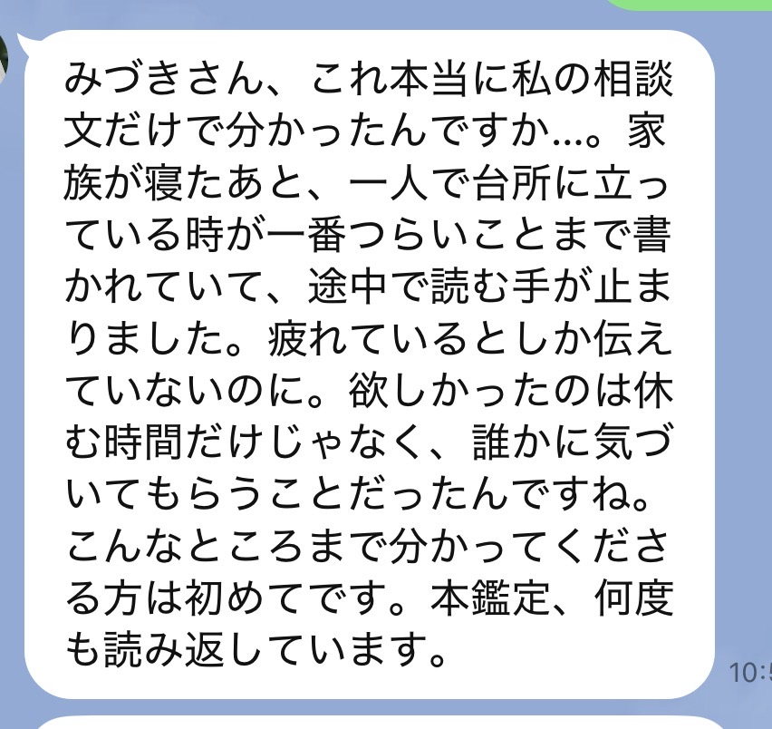
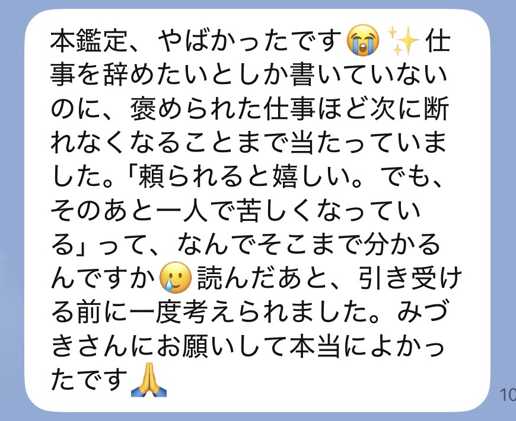
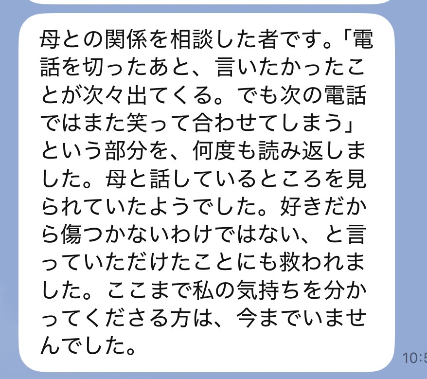
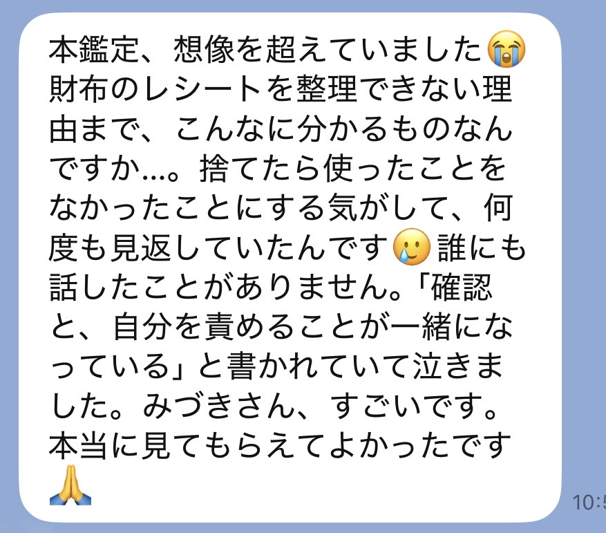
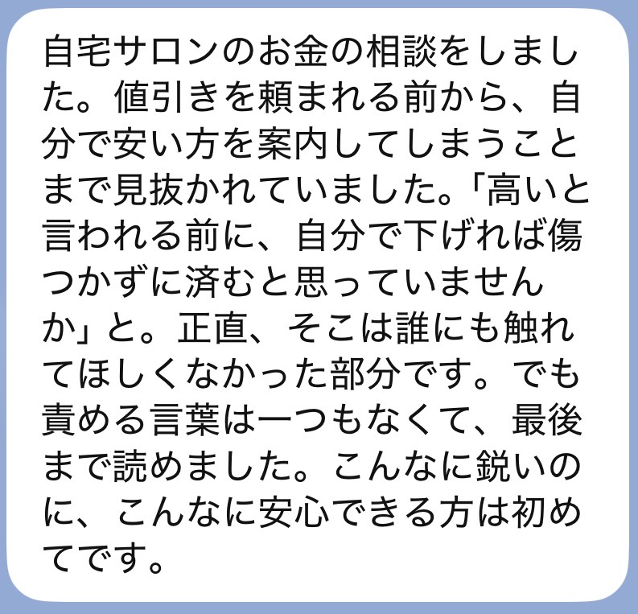
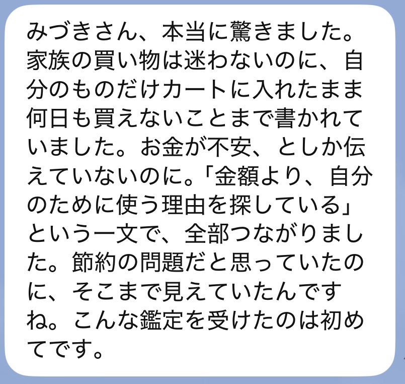

神言降ろしの本鑑定
あの鑑定で、
視えたのは
半分だけです
無料鑑定を受け取った方へ
SCROLL
あの無料鑑定、書いたのは私です。
送ってくださった言葉を、一つずつ読みながら書きました。
読んでいる時、どこかで手が止まりませんでしたか。
胸のあたりが、ざわっとした。
「あ、それだ」と思った。
少し怖いけれど、本当はわかっていた気がした。
手が止まった場所は、
あなたの人生がずっと
詰まっていた場所。
胸がざわついた場所は、
神様からのメッセージが
触れた場所です。
「少し怖いけど、わかる」と思った場所。
そこはもう、変わる準備ができています。
未来を言い当てて、すごいでしょと言いたいわけじゃない。
怖いことを言って、言う通りにさせたいわけでもない。
私が届けたいのは、神様からの本当のメッセージです。

20,000名以上を視てきて、
ほとんどの方が同じことを言います。
「私の努力が足りないから」
「私に価値がないから」
「私だけ、見放されたんだ」
届いているサインに、気づけなくなっているだけです。
無料鑑定でお伝えしたのは、今あなたに何が起きているか。それだけです。
それでも、心が軽くなった方は多い。
でも、ひとつだけ。
「軽くなったのに、なぜかまた戻る」
そう感じたこと、ありませんか。
逆に、無料鑑定がピンと来なかった方。それも同じです。
表層しか視ていないので、まだ本当の場所に届いていないだけです。
「自分が何をしたいのか分からない」——そう書かれる方も、本当に多いです。
それも、詰まりのしわざです。
当たっていた。
胸が軽くなった。
少し、泣きそうになった。
そこで終わると、数日後、また同じ日常に戻ります。
人生が詰まっていた根本のパターンは、気づいただけでは変わりきらないからです。
無料鑑定は、
扉の前に立つためのもの。
本鑑定は、その扉を開けて、
人生を動かしていくためのものです。
「またお金を使って、何も変わらなかったらどうしよう」
その気持ち、自然です。
お金を払ってまで見てもらうのは、少し怖いですよね。

それ、弱いからじゃないんです。
何度も期待して、何度も自分を責めてきたからです。
急かしません。
ただ、今届いているサインを、日常に埋もれさせないでほしいだけです。
どちらを選んでいただいても、
一人ずつ、丁寧に視ていきます。
違うのは、どこまで深く降ろすかです。

今の人間関係やお金、仕事の流れ、家族の空気。心が揺れている場所。
落ち着きを取り戻すために、何から整えればいいのか。
今の苦しさを、まず軽くしたい方へ。
月読の章を受け取る限定料金 4,980円
今起きていることだけでなく、なぜそれが起きたのかを、魂の深いところから視ていきます。
同じところで何度も躓いている自覚がある方は、こちらの方が深く整理しやすい流れが出ています。
神言降ろしを受け取る限定料金 9,980円鑑定は、お一人ずつ
視て、書いています。
お受けできる数に、
限りがあります。
今の状況を、そのままLINEへ。
どちらが合うか、私からお返事します。

お名前と、購入画面のスクリーンショットをLINEに送ってください。ここで一度、私が確認します。
ここが、いちばん大事なところ。
今いちばんしんどい瞬間。認めるのが怖かったこと。夜にふっと出てくる気持ち。
上手に書こうとしなくて大丈夫。思いついたままの言葉で構いません。
いただいた言葉を一つずつ受け取りながら、なぜ今この流れが来ているのかを視ていきます。
ここに時間をかけたいので、二〜三日いただいています。
読み終えたあとに、そのまま置いておける長さで書きます。何度でも読み返してください。
届いたLINEを、そのまま載せています。






今、生活が苦しくて、このお金を出すために何かを削らなければならない方。
今回は、見送ってください。
無料鑑定でお伝えしたことを、何度でも読み返してください。
そこに書いたことは、本当のことです。
状況が変わった時に、また来てくださったらいい。
その時、私はここにいます。

私は、神様の声がただ聞こえる人ではありません。
神様から届いたものを、今のあなたが受け取れる言葉に変える人です。
無料だから軽く見る。浅く見る。当たり障りのないことだけ言う。
それは、神様から預かった言葉にも、あなたの人生にも失礼だと思っています。
だから、無料鑑定でも手を抜きませんでした。
そして、そこで視えたものの奥が、まだ残っています。
あなたがここまで辿り着いたこと自体に、意味があります。